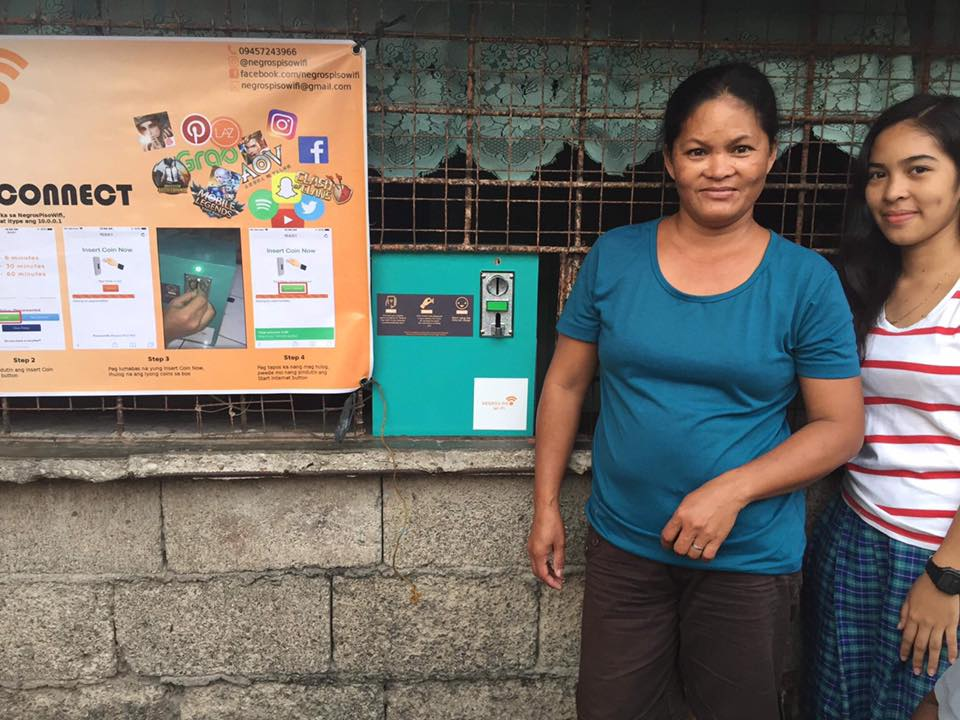

Filipinos love the internet. Cheap and Affordable Internet!
In fact, they love it so much that an average Filipino spent nine hours online per day in 2018, according to the report “Digital in 2018” by social media agency We Are Social..
The study revealed that all of the 67 million Filipino internet users, which represents about 63 percent of the country’s total population, are on social media--making the Philippines the number one country in social media use in 2017.
For residents of low-income communities, Piso Wi-Fi machines offer a more affordable way to connect to the internet than going to an internet café or buying pre-paid mobile data from telcos. It’s also an attractive business for small neighborhood entrepreneurs because it requires less capital compared to putting an internet café, which requires renting a space and buying computer desktops. “Most of the people have smartphones nowadays, even children.
Anyone can start operating a Piso Wi-Fi business with a capital of less than Php 20,000. 18500 for the machine and 2000php for a monthly internet.

Filipinos are like entrepreneurs by nature and very open minded when it comes to increasing their income. It's a way of people oppotunities to have a micro business that can earn passive income.
The machine is very easy to install and manage. It's paperless and you can view the sales history remotely anywhere in the world.
Negros Piso Wifi is the official distributor of AdoPisoft and the said machine is distributed by us.